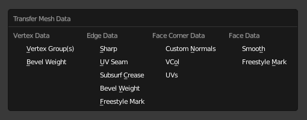

Перенос Даних -- Data Transfer¶
Інструмент Data Transfer переносить різні типи даних з однієї сіті на іншу. До таких типів даних належать групи вершин, карти UV, кольори вершин, власні нормалі...
Перенос працює шляхом генерування розкладок елементів (вершин, ребер тощо) джерельної та цільової сітей на основі один до одного або розкладання кількох елементів джерела та один елемент цілі, інтерполюючи розкладку.
Дані -- Data¶
Орієнтир -- Reference
| Mode: | Object Mode |
|---|---|
| Panel: | |
| Menu: | |
| Hotkey: | Shift-Ctrl-T |
Transfers data layer(s) from active to selected meshes.
- Заморозити Оператор -- Freeze Operator
- Запобігає змінам в уставах для повторного запуску оператора. Це корисно, якщо ви правите різні устави одночасно для важкої геометрії.
- Тип Даних -- Data Type
Які дані перенести.
Типи даних.
- Створити Дані -- Create Data
- Додає шари даних на сіті призначення, при потребі.
- Розкладка Вершин -- Vertex Mapping
- Метод, використовуваний для розкладки вершин джерела по вершинах призначення. Оскільки ці опції змінюються залежно від опцій Data Type, вони пояснюються у Vertex Mapping нижче.
Розкладка Вершин -- Vertex Mapping¶
Топологія -- Topology¶
Найпростіша опція, очікує, що обидві сіті мають ідентичну кількість елементів та їх порядки збігаються (індекси). Корисно, наприклад, між сітями, що були ідентичними копіями, а деформувалися по-різному.
Розкладки Один-на-Один -- One-To-One Mappings¶
Вони завжди вибирають тільки один елемент джерела для одного елемента призначення, часто базуючись на найкоротшій відстані.
- Вершини -- Vertices
- Найближча Вершина -- Nearest Vertex
- Використовує найближчу вершину джерела.
- Вершина Найближчого Ребра -- Nearest Edge Vertex
- Використовує найближчу вершину джерела найближчого ребра джерела.
- Вершина Найближчої Грані -- Nearest Face Vertex
- Використовує найближчу вершину джерела найближчої грані джерела.
- Ребра -- Edges
- Найближчі Вершини -- Nearest Vertices
- Використовує ребро джерела, вершини якого є найближчим до вершин ребра призначення.
- Найближче Ребро -- Nearest Edge
- Використовує найближче ребро джерела (використовуючи середини ребер).
- Ребро Найближчої Грані -- Nearest Face Edge
- Використовує найближче ребро джерела найближчої грані джерела (використовуючи середини ребер).
- Кутки Граней -- Face Corners
Куток грані не є сам по собі реальним елементом, це певний вид відділеної вершини, прикріпленої до певної грані. Звідси, обидва аспекти, вершин (локація) та граней (нормаль, ...), використовуються для відповідності.
- Найближчий Кут та Найбільш Підхожа Нормаль -- Nearest Corner and Best Matching Normal
- Використовує куток джерела, що має найбільш подібну розділену нормаль, як і у призначення, з тими кутками, що мають спільну найближчу вершину джерела.
- Найближчий Кут та Найбільш Підхожа Нормаль Грані -- Nearest Corner and Best Matching Face Normal
- Використовує куток джерела, що має найбільш подібну нормаль грані, як і у призначення, з тими кутками, що мають спільну найближчу вершину джерела.
- Найближчий Кут Найближчої Грані -- Nearest Corner of Nearest Face
- Використовує найближчий куток джерела найближчої грані джерела.
- Грані -- Faces
- Найближча Грань -- Nearest Face
- Використовує найближчу грань джерела.
- Найбільш Підхожа Нормаль -- Best Normal-Matching:
- Використовує грань джерела, нормаль якої є найбільш подібною, як і для грані на призначенні.
Інтерпольовані Розкладки -- Interpolated Mappings¶
Ці використовують кілька елементів джерела для кожного елемента призначення, інтерполюючи їх дані у ході переносу.
- Вершини -- Vertices
- Найближче Ребро Інтерпольовано -- Nearest Edge Interpolated
- Використовує найближчу точку на найближчому ребрі джерела, інтерполюючи дані з обох вершин ребра джерела.
- Найближча Грань Інтерпольовано -- Nearest Face Interpolated
- Використовує найближчу точку на найближчому грані джерела, інтерполюючи дані з усіх вершин грані джерела.
- Проектована Грань Інтерпольовано -- Projected Face Interpolated
- Використовує точку грані на джерелі, що потрапляє шляхом проектування на вершину призначення уздовж її власної нормалі, інтерполює дані з усіх таких вершин грані джерела.
- Ребра -- Edges
- Проектоване Ребро Інтерпольовано -- Projected Edge Interpolated
- Це процес відбирання. Кілька променів відкидаються уздовж ребра призначення (інтерполюючи обидві нормалі вершин ребра) і, якщо достатньо з них потрапляє на ребро джерела, то усі дані потраплених ребер джерела інтерполюються на ребро призначення.
- Кутки Граней -- Face Corners
Куток грані не є сам по собі реальним елементом, це певний вид відділеної вершини, прикріпленої до певної грані. Звідси, обидва аспекти, вершин (локація) та граней (нормаль, ...), використовуються для відповідності.
- Найближча Грань Інтерпольовано -- Nearest Face Interpolated
- Використовує найближчу точку найближчої грані джерела, інтерполює дані з усіх таких кутків грані джерела.
- Проектована Грань Інтерпольовано -- Projected Face Interpolated
- Використовує точку грані на джерелі, що потрапляє шляхом проектування на куток призначення уздовж її власної нормалі, інтерполює дані з усіх таких кутків грані джерела.
- Грані -- Faces
- Проектована Грань Інтерпольовано -- Projected Face Interpolated
- Це процес відбирання. Кілька променів відкидаються з усієї грані призначення (уздовж її власної нормалі) і, якщо достатньо з них потрапляє на грань джерела, то усі дані потраплених граней джерела інтерполюються на грань призначення.
Додаткові опції¶
- Авто Трансформації -- Auto Transform
- Автоматично обчислює трансформування для отримання найкращої можливої відповідності між сітями джерела та призначення.
- Трансформації Об'єкта -- Object Transform
- Оцінює сіті джерела та призначення у глобальному просторі.
- Лише Сусідня Геометрія -- Only Neighbor Geometry
Елементи джерела повинні знаходитися ближче, ніж задана відстань, до елементів призначення.
- Макс Відстані -- Max Distance
- Максимально дозволена відстань між елементами джерела та призначення (для не-топологічних розкладок).
- Радіус Променя -- Ray Radius
- Width of rays. Useful when ray casting against vertices or edges.
- Режим Міксу -- Mix Mode
Як впливають значення джерела на елементи призначення.
- All -- Усе
- Замінює все в призначенні (зауважте, що Mix Factor все ще використовується).
- Вище Порогу -- Above Threshold
- Замінює значення призначення тільки, якщо воно є вище заданого порогу уставою Mix Factor. Як цей поріг тлумачиться, залежить від типу даних, зауважте, що для булевих значень ця опція підробляє логічне І.
- Нижче Порогу -- Below Threshold
- Замінює значення призначення тільки, якщо воно є нижче заданого порогу уставою Mix Factor. Як цей поріг тлумачиться, залежить від типу даних, зауважте, що для булевих значень ця опція підробляє логічне АБО.
- Мікс -- Mix, Додання -- Add, Відняття -- Subtract, Множення -- Multiply
- Застосовує одну з цих операцій, використовуючи Фактор Міксу для керування тим, скільки значення джерела або призначення використовувати. Доступно тільки для кількох типів (групи вершин, кольори вершин).
- Фактор Міксу -- Mix Factor
- Наскільки перенесені дані змішуються з наявними вже на цілі даними (не підтримується для усіх типів даних).
Розстава Даних -- Data Layout¶
Орієнтир -- Reference
| Mode: | Object Mode |
|---|---|
| Panel: | |
| Menu: |
Переносить розставу шару(ів) даних з активної на виділені сіті.
- Тип Даних -- Data Type
Які дані перенести.
Типи даних.
- Точна Відповідність -- Exact Match
- Також видаляє деякі шари даних із сіті призначення, при потребі, так щоб остання відповідала точно сіті джерела.
- Вибір Шарів Джерела -- Source Layers Selection
Які шари переносити, у випадку багато-шарових типів.
- Активний Шар -- Active Layer
- Переносить тільки активний шар даних.
- Усі Шари -- All Layers
- Переносить усі шари даних.
- Підхожі Шари Призначення -- Destination Layers Matching
Наскільки мають бути відповідними шари джерела та призначення.
- За Іменем -- By Name
- Відповідність шарів даних визначається за іменем.
- За Порядком -- By Order
- Відповідність шарів даних визначається за порядком (індексами).
Xem thêm